Maintenance Recommendations
Monitor jaw plate wear pattern for uneven wear indication. Replace toggle plates immediately if deformation detected. Check pliman adjustment monthly.
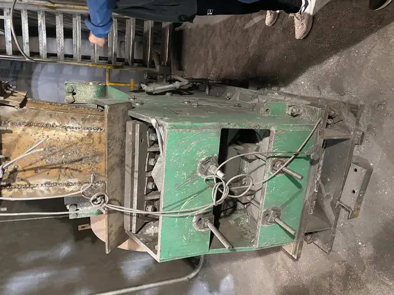
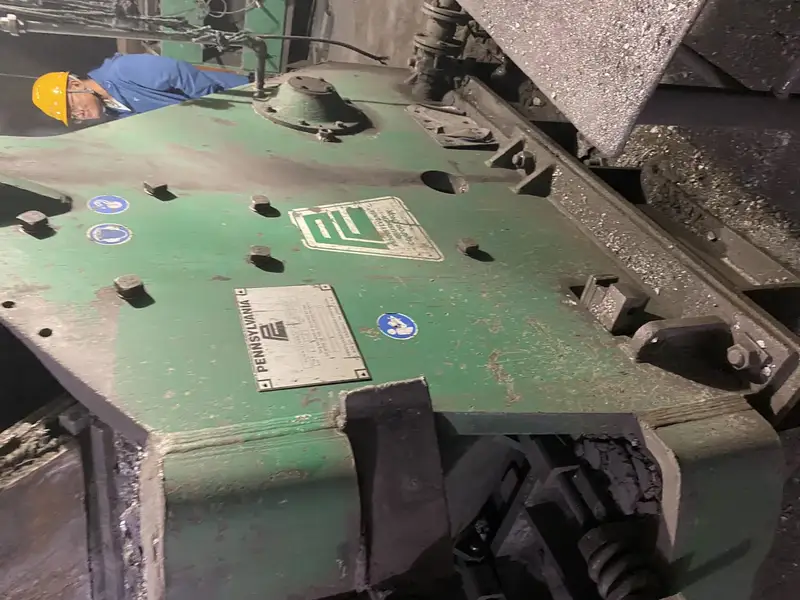
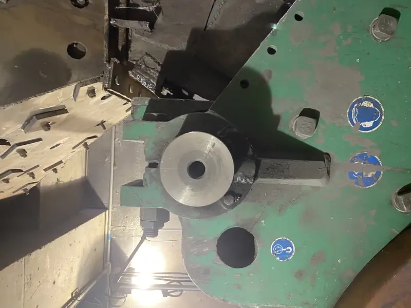
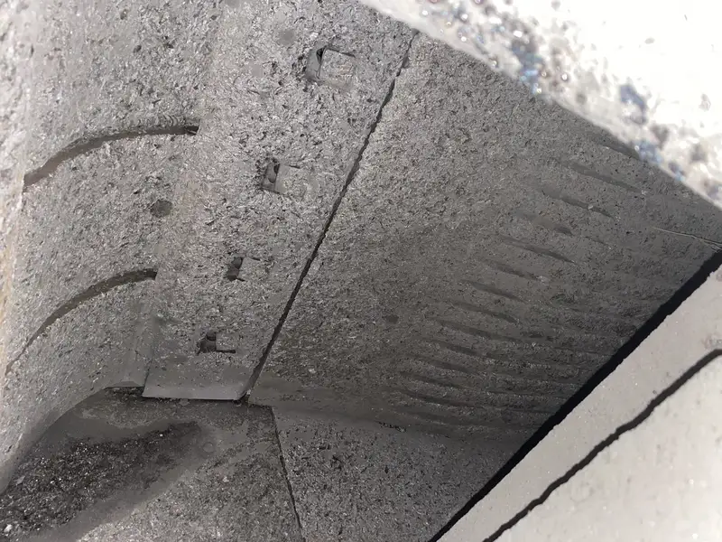
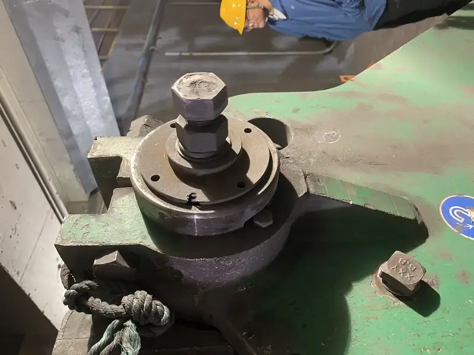
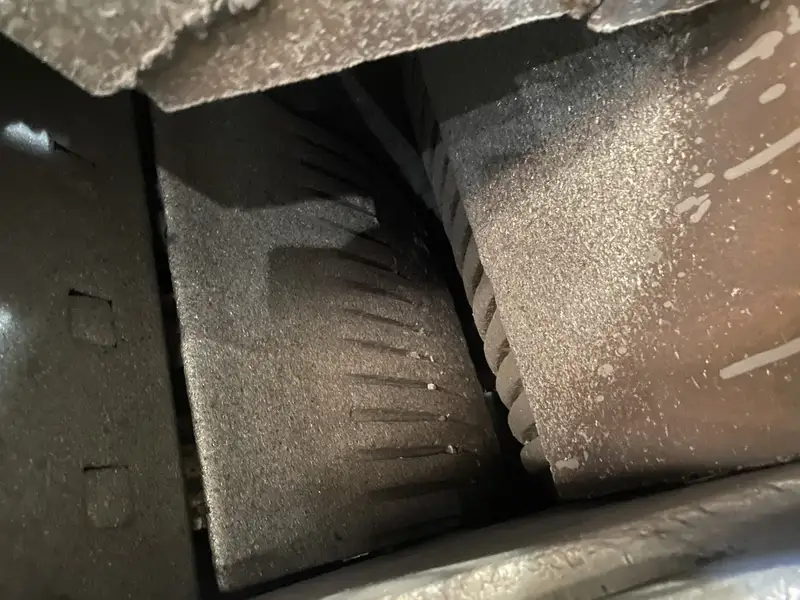
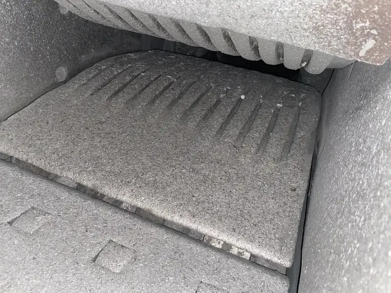
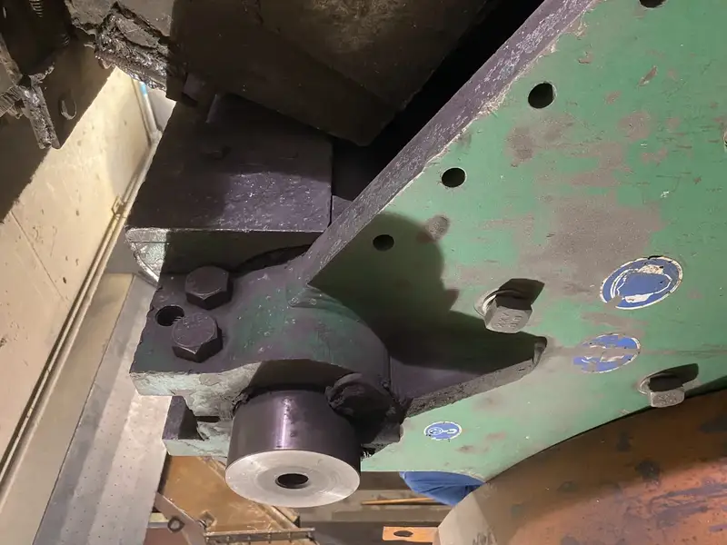
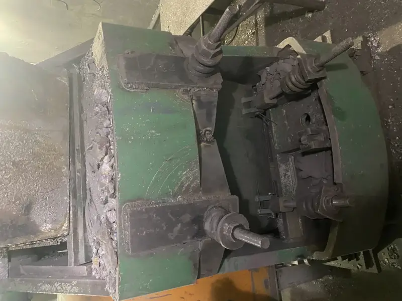
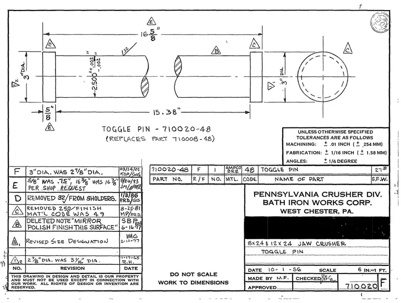
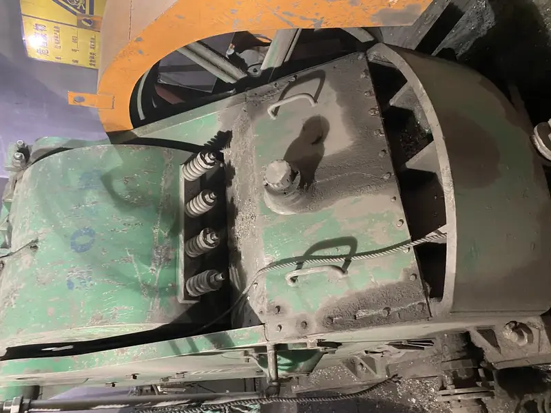
| Models | Wear Parts |
|---|---|
| Crusher Type | Double Toggle Jaw Crusher |
| Feed Opening | DT 15 X 30 (15" x 30") |
| Capacity | Up to 800 TPH |
| Material | Coal, Limestone, Salt |
ASTM A128 Grade B-2 high manganese steel (jaw plates), ASTM A148/148M Grade 175-145 (toggles), ASTM A27/27M Grade 70-36 (pliman)
DT 15 X 30
Jaw Plates, Front Toggle, Rear Toggle, Pliman
Wear plates on Pennsylvania/TerraSource double-toggle jaw crushers (DT series); crushing by compression between fixed and swing jaws
| Grade | C | Si | Mn | Cr |
|---|---|---|---|---|
| ASTM A128 Grade B-2 | 1.05-1.20 | ≤1.0 | 11.5-14.0 | ≤0.5 |
Work-hardens under impact for progressively harder wear surface; ideal for jaw crusher compression applications
Toggle plates for Pennsylvania double-toggle jaw crushers; transmit crushing force and protect crusher from overload
| Grade | C | Si | Mn | Cr | Mo |
|---|---|---|---|---|---|
| ASTM A148/148M Grade 175-145 | 0.26-0.34 | 0.40-0.80 | 0.90-1.30 | 0.90-1.30 | 0.15-0.25 |
Ultra-high strength for critical structural components; designed to yield under overload to protect crusher frame
Adjustable push plate for Pennsylvania jaw crushers; maintains jaw gap setting and transfers toggle force
Controlled yield point for safe crusher operation; designed as sacrificial component to prevent catastrophic failure
Pennsylvania jaw crusher side liners protecting frame walls from abrasive coal/mineral feed
| Grade | C | Si | Mn | Cr |
|---|---|---|---|---|
| Mn13Cr2 | 1.05-1.35 | ≤1.0 | 11.0-14.0 | 1.5-2.5 |
Standard work-hardening steel; cost-effective for moderate impact applications
| Grade | C | Si | Mn | Cr |
|---|---|---|---|---|
| Mn18Cr2 | 1.05-1.35 | ≤1.0 | 16.0-19.0 | 1.5-2.5 |
Superior work-hardening depth; 20-30% longer life than Mn13 in high-compression applications
Monitor jaw plate wear pattern for uneven wear indication. Replace toggle plates immediately if deformation detected. Check pliman adjustment monthly.